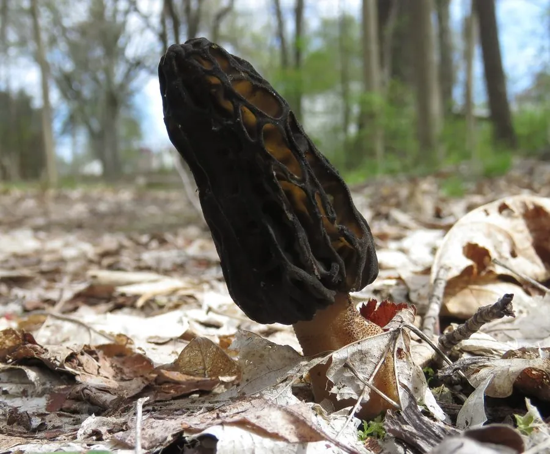

真菌 · 真菌界
尖顶羊肚菌 Morchella conica

羊肚菌科名贵食用菌，菌盖圆锥形、表面布满蜂窝状凹坑，春季生于阔叶林地上，必须彻底熟透后食用。
- 分类
- 门子囊菌门纲盘菌纲目盘菌目科羊肚菌科属羊肚菌属
- 栖息环境
- 阔叶林、针阔混交林及林缘草地，春季低温高湿时发生
- 地理分布
- 北半球温带广布，中国华北、西南、西北等地有分布，欧洲、北美亦产
- 保护级别
- 暂无评估；野生资源因过度采挖明显减少，已实现人工栽培
物种志
尖顶羊肚菌的子实体高 6–15 厘米，菌盖圆锥形至长锥形，顶端尖，长 4–8 厘米，表面由纵向与横向的脊交织成蜂窝状凹坑，凹坑内为子实层，初为灰褐至黄褐色，成熟后转深。菌柄圆柱形，白色至淡黄，中空，基部稍膨大。孢子印乳白至淡黄色，子囊孢子椭圆形，光滑。
尖顶羊肚菌为春季发生的土壤腐生菌，见于阔叶林、针阔混交林及林缘草地，常在杨柳、榆树附近成片出现，发生期 3–5 月，喜凉爽湿润。它是著名的食用菌，香气浓郁、肉质脆嫩，但因生菌体含肼类毒素，必须彻底加热熟透后食用，生食或半生食可引起中毒。野生资源因过度采挖与栖息地减少而下降，现已开展人工栽培，价格昂贵。
形态与习性
- 菌盖圆锥形，高 4–8 厘米，表面蜂窝状凹坑
- 菌柄圆柱形，白色至淡黄，中空
- 孢子印乳白至淡黄色，孢子椭圆形光滑
- 生境阔叶林与林缘地上，春季 3–5 月发生
- 食用性名贵食用菌，必须彻底熟透后食用
- 毒性生菌体含肼类毒素，生食可致中毒
趣味知识
- 羊肚菌的蜂窝状凹坑是它的子实层，孢子就长在凹坑表面，而不是菌褶上。
- 生羊肚菌含肼类毒素，加热可破坏，因此必须炒熟煮透，不能凉拌或涮食。
- 它属于子囊菌，与常见的蘑菇、香菇等担子菌在演化上相距甚远。
- 野生羊肚菌价格高昂，人工栽培需模拟春季低温高湿的环境，产量仍有限。